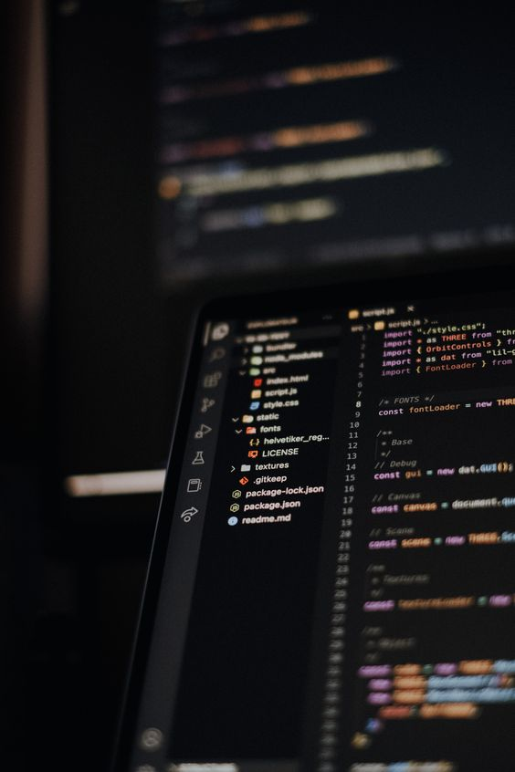

HAI!
Aku M. Eka Miharja
Ini adalah Website portofolioku. Sedikit bercerita, ini adalah project website pertamaku, aku sangat senang bisa berhasil membuat website ini karena akhirnya aku menyelesaikan tugas Submission dari Dicoding Academy. Selain itu aku banyak belajar dari pembuatan website ini seperti penggunaan flexbox yang ternyata lebih memudahkan layouting dan lebih simple daripada float. Website ini tentang portofolio atau diriku selama ini mulai dari pendidikan, data diri, hobi dan lain sebagainya. TERIMA KASIH!!!
Mulai Mengenal Programming
2023
Pada tahun 2023, aku mulai mengenal "Programming" dari teman-temanku di SMA. Awalnya aku tidak tertarik dengan programmming, karena menurutku programming sesuatu hal yang sulit dipahami dengan berbagai macam bahasa pemrogramman yang ada. Tetapi aku banyak melihat konten di media sosial seperti Instagram dan TikTok tentang pemrogramman website, khususnya Front-End Developer. Pada saat melihat tentang Front-End aku merasa itu seru, karena mengubah tampilan website menjadi lebih hidup dan tidak mengerikan.
Masuk Jurusan TIK
2024
Di tahun 2024, aku lulus dari SMA dan melanjutkan pendidikan di Politeknik Negeri Jakarta, aku tidak menyangka masuk ke jurusan TIK padahal sebelumnya aku kurang suka dengan dunia komputer dan belum mempunyai pengetahuan dasar tentang komputer, khususnya Programming. Tapi dengan begitu aku menjadi semangat dalam mempelajari dunia pemrogramman dan mulai mempelajari tentang Front-End, alasannya karena menurutku itulah yang paling seru dari dunia pemrogramman. Hingga pada akhirnya aku mengikuti bootcamp dari Dicoding sekarang.
Deskripsi
Sedikit deskripsi tentang diriku seperti hobi, keahlian, dan cita-cita.
Hobi
Aku mempunyai hobi yang biasa biasa saja, salah satu hobiku yang paling sering aku lakukan ialah bersepeda. Aku sangat senang bersepeda, menurutku bersepeda merupakan olahraga yang paling seru karena bisa sambil melihat jalan dan tidak membutuhkan waktu yang cukup lama dibandingkan jenis olahraga yang lainnya, seperti berlari. Selain olahraga aku juga sangat suka mendengarkan musik pop, rock, dan juga jazz. mendengarkan musik membuatku menjadi lebih tenang dan meningkatkan mood sehari-hari.
Keahlian

Keahlian saya sebetulnya ada pada bidang Front-End, walaupun baru sedikit yang saya pahami seperti html dan css, tetapi saya akan terus mengembangkan keahlian saya di bidang Front-End agar nantinya saya dapat mempunyai skill sebagai Front-End Developer dan bisa membuat website lebih interaktif dan juga responsif. Selain pada bidang Front-End keahlianku yang lainnya ialah membuat dasar logika menggunakan bahasa C++ yang diajarkan di kampusku. Aku sering membuat project Ticketing dan juga program ATM.
Cita-cita
Cita-cita yang saya sangat inginkan ada banyak tentunya, tetapi yang paling saya inginkan ialah mempunyai mobil sport, seperti Ferrari atau McLaren, alasannya karena aku dari kecil sangat menyukai dunia otomotif khususnya pada jenis roda empat. Selan itu yang paling aku inginkan adalah menjadi Fullstack Developer atau juga sebagai Dev Ops, karena kedua itu menurut saya merupakan titik puncak dari seorang programmer dan memiliki kemampuan yang sangat banyak di bidang komputer.